1.什么是Moss
1.1 什么是服务治理
服务治理，我也称之为微服务治理，是指用来管理微服务的整个生命周期。包括应用的创建，服务名的规范，服务的上下线，服务的迁移，整个服务的生老病死等方方面面的治理。
1.2 Moss概述
Moss(莫斯)是服务治理平台的代号，取名灵感来自电影《流浪地球》中的莫斯(Moss),Moss是电影《流浪地球》中领航员号空间站的人工智能机器人-负责管理空间站所有事务以及流浪地球的计划，而Moss跟Boos一样，是所有微服务的老板，所有微服务的生命周期将归其统管。
为什么会出现Moss？因为基于Spring Cloud的微服务体系，缺乏统一的可视化的纳管治理平台。
Spring Cloud中国社区从2017年11月份，开始规划Spring Cloud Admin的开发和设计，专注于研究这个领域。 代码地址:https://github.com/SpringCloud/Moss
#### 1.2.1 竞品分析
Moss的竞品分析对比如下表所示:
| 对比选项 | Spring Boot Admin | Moss |
|---|---|---|
| 服务画像 | ❌ | ✅ |
| 服务实例画像 | ☑️ | ✅ |
| 支持单Eureka | ☑️ | ✅ |
| 支持单Nacos | ☑️ | ✅ |
| 支持多Eureka，在线动态增加，删除,切换 | ❌️ | ✅ |
| 前端技术 | Vue | Ant Design Pro |
| 支持Spring Boot 1.5.X和Spring Boot 2.0.X | ☑️ | ✅ |
| 服务调用拓扑 | ❌ | ✅ |
| 在线查看Jar依赖 | ❌ | ✅ |
| 服务归属(项目，Owner) | ❌ | ✅ |
| 服务和实例支持模糊查询 | ❌ | ✅ |
| 服务闪烁告警 | ❌ | ✅ |
| 服务评分打星 | ❌ | ✅ |
| 服务列表画像 | ❌ | ✅ |
| 服务实例列表画像 | ❌ | ✅ |
| 服务实例内部组件列表，使用哪些Spring Cloud组件 | ❌ | ✅ |
其中☑️表示功能相对较弱 ✅表示功能完整强大 ❌表示功能缺失
1.2.1 Moss RoadMap
Roadmap 时间点：
✅表示当前稳定可用版本
| 版本 | Milestone | 主要特性 |
|---|---|---|
| ✅1.0.0.RELEASE | 2019.4.21 | 稳定可用版本 |
1.2.2 Moss开发团队
| 姓名 | 角色 | github地址 |
|---|---|---|
| SoftwareKing | Owner | https://github.com/SoftwareKing |
| iShawnWang | 前端开发 | https://github.com/iShawnWang |
1.3 Moss的功能
- Moss的功能包括服务画像，服务实例画像，服务上下线事件记录，服务上下线websocket消息通知，针对生产应用可配置多种服务上线通知工具，支持多种注册中心，比如Eureka，Consul，Nacos.支持动态连接注册中心进去切换进行服务治理操作。
1.3.1 服务画像
- 服务画像:
- 服务概要信息-
包括服务实例数，UP数，DOWN数，OffLine数，服务归属的项目，归属的Owner等。 - 服务健康指标-展示服务的健康信息
- 服务请求映射-展示出服务对外提供的
所有REST接口 - 服务调用链-展示服务的依赖调用拓扑
- 服务API监控-通过http trace和全链路监控对API进行监控
- 服务内部组件状态-内部组件的依赖，使用版本状态
- 服务性能指标-
对服务进行QPS，性能指标收集打分 - 服务评级-自动根据评级规则对服务进行跑批评分打星。
- 服务概要信息-

PS: Spring Boot Admin服务墙，如上图所示，看完之后谁能告诉我，它的服务画像能画出什么来。 Moss的服务画像列表如下所示，对比显而易见！
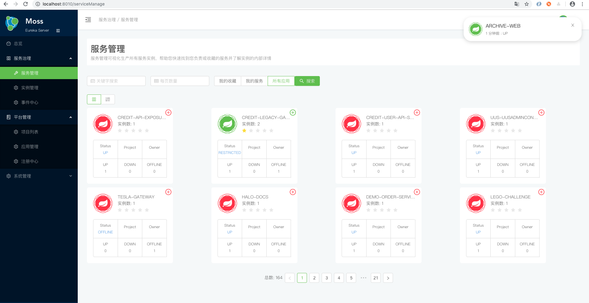
1.3.2 服务实例画像
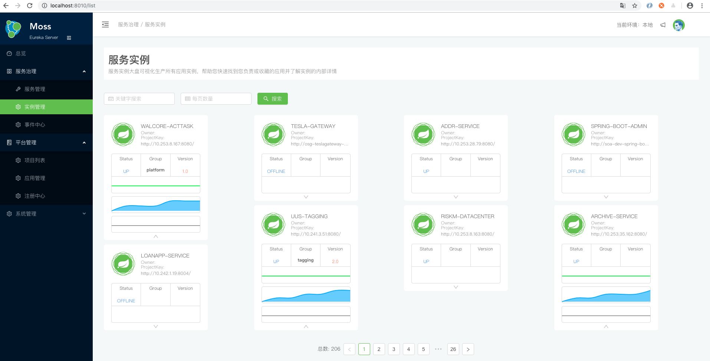
服务实例画像
- 实例调用拓扑-对接Skywalking，PinPoint等获取实例调用拓扑

- 实例Build信息-实例构建信息

- 实例Git提交信息-最后一次提交人的Git详细信息

- Spring Cloud使用功能列表
- 实例的健康信息
- 实例的上下线Event信息

- 服务日志级别-查看应用的日志级别,根据需要调整日志级别打印对应日志级别的信息 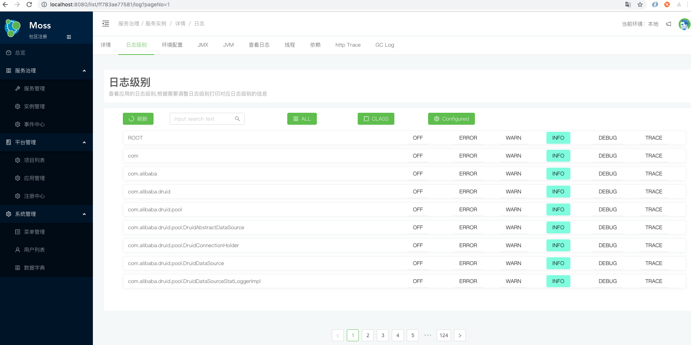
- 环境配置-查看当前应用的环境配置信息
- 实例JMX信息-分类展示实例的JMX信息 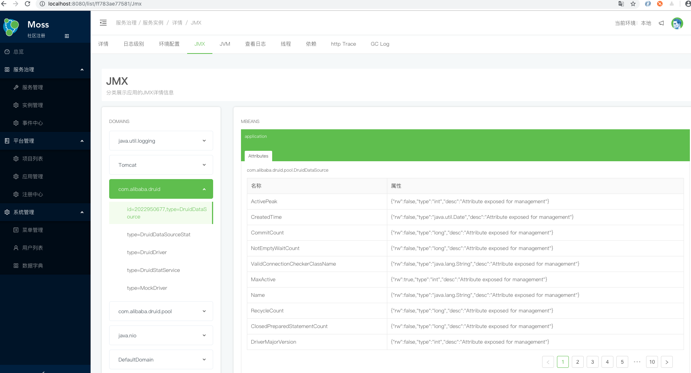
- 查看JVM-实时展示应用实例的内存使用情况，GC次数，以及CPU和内存使用率 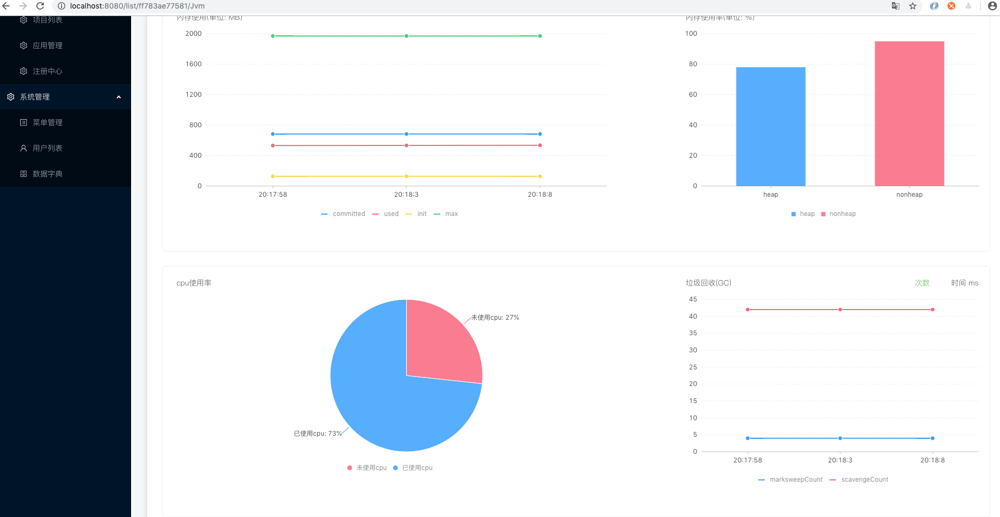
- 查看日志-增量实时获取应用的info日志或Error日志 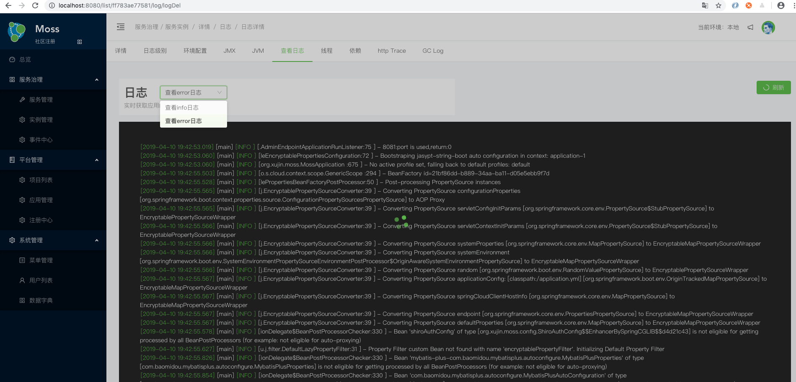
- 查看线程-查看当前实例的线程情况 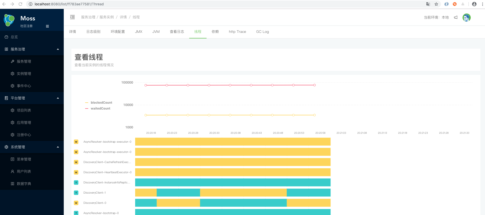 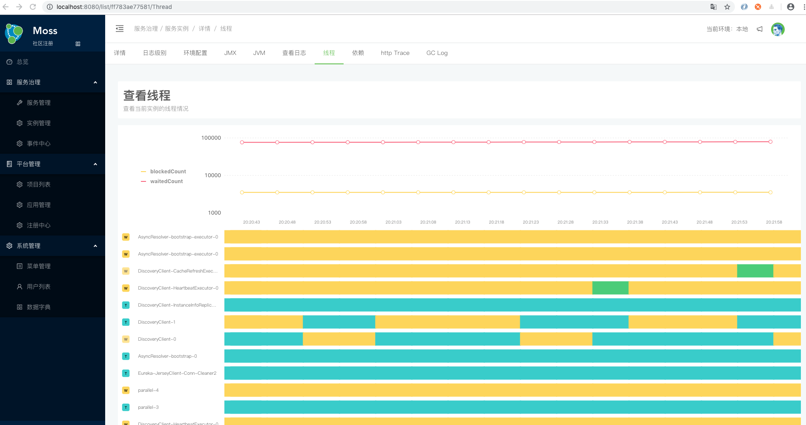
查看实例内部依赖-查看实例的内部Jar依赖情况，统计分析展示依赖拓扑等 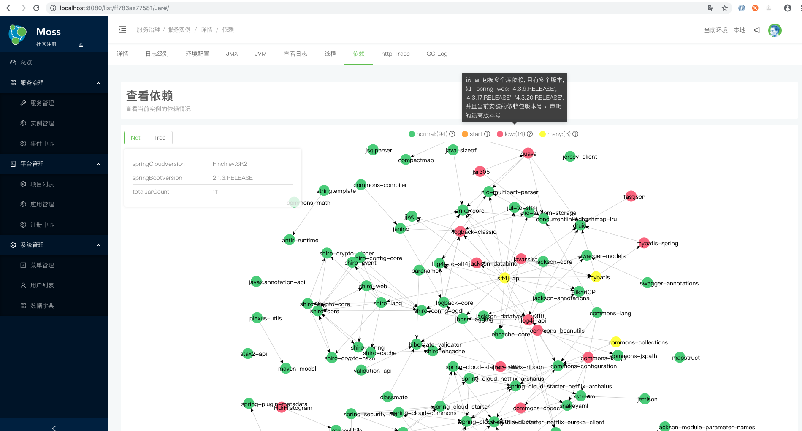
HttpTrace-按时间展示http请求的轨迹信息，包括请求的路径，Response的状态，调用耗时等 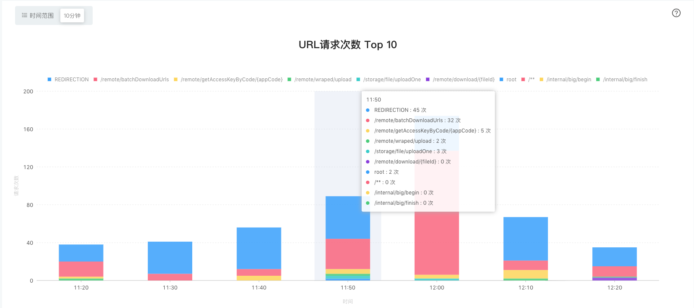
- 实例调用拓扑-对接Skywalking，PinPoint等获取实例调用拓扑
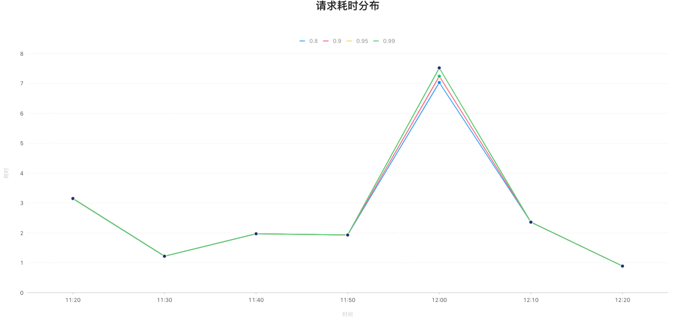
- 支持GC Log日志查看

1.3.3 服务纳管
项目对应多个应用，每个应用由多个实例组成提供具体的服务，服务的生命周期管理需要可控，可追溯，可监控，可规范。 由Spring Cloud体系构建的微服务体系，应用名即服务名。服务纳管分为历史应用纳管和新应用纳管。
- 新应用纳管: 新应用使用Moss-Client，启动时连接Moss对应用名进行统一拦截check，从而规范应用名。
- 旧应用纳管: 旧应用引入对应的版本的Moss-Client，在Moss平台对其手动接入管理，录入应用名。
1.3.4 多注册中心支持
Moss通过注册中心接管Spring Cloud体系的微服务。支持动态连接注册中心，填注册中心的URL即可，快速接管服务。
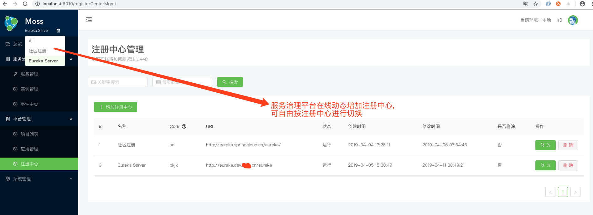
1.3.5 服务报表数据
Moss通过注册中心接管Spring Cloud体系的微服务。然后获取每个服务使用Spring Boot的版本和Spring Cloud的版本，Moss的接入率以报表数据展示。
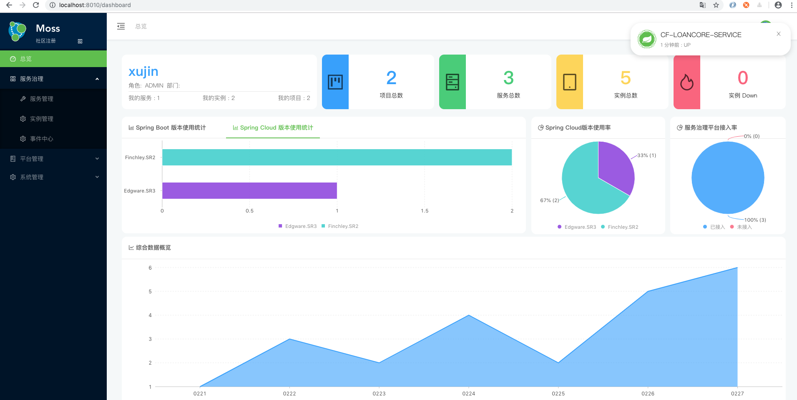
1.3.6 事件日志
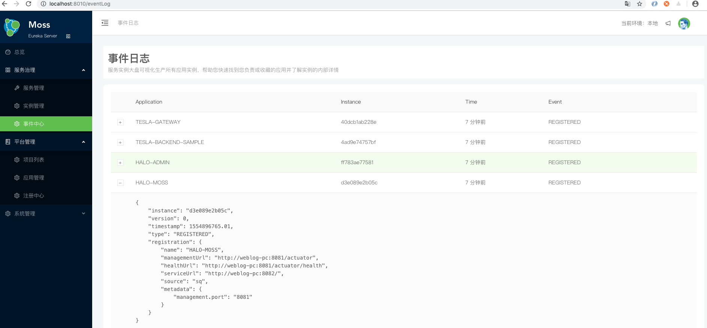
1.3.7 元数据管理
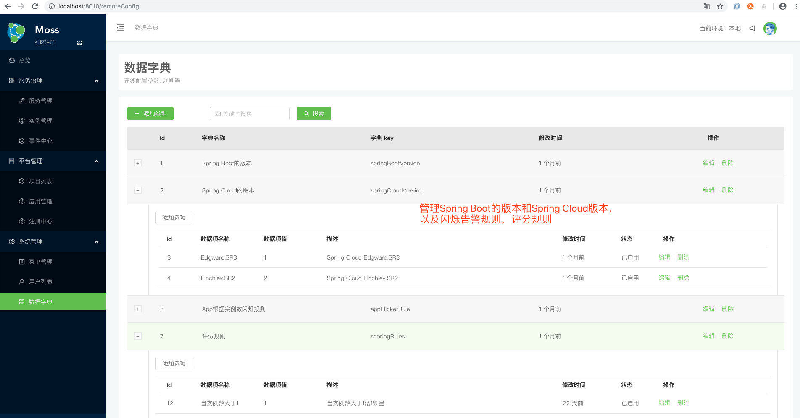
1.3.9 Spring Cloud组件使用情况
2.Moss的架构设计
2.1 Moss的架构设计
Moss基于Spring Boot Admin 2.1.3版中的spring-boot-admin-server模块二次开发，基于可扩展思想。前端采用Ant Design Pro，采用Spring Boot+shiro+JWT+LDAP实现整个权限认证管理。通过Moss-Cloud-Adapter模块支持多注册中心，应用启动对应用名进行check是否规范。
实现细节后续补充
2.2 Moss的服务设计
Moss服务端主要自动探测EndPoint，代理EndPoint，对接各种注册中心，提供可视化的管理。
2.3 Moss的客户端设计
moss客户端主要用于内置预设自研端点和管理配置信息，使接入方无感知接入。 >实现细节后续补充
2.3.1 Moss-Client
Moss客户端支持两种Spring Boot版本，分别是Spring Boot 1.5.X和Spring Boot 2.X，使用只需引入moss-client-starter即可。示例2.x的客户端如下所示。
1.引入moss-client-starter
<dependency>
<groupId>org.xujin.moss</groupId>
<artifactId>moss-client-2.x</artifactId>
<version>1.0.0.RELEASE</version>
</dependency>
2.在application.yml中增加配置如下
info.groupId: @project.groupId@
info.artifactId: @project.artifactId@
info.version: @project.version@
3.在pom中增加maven插件
<plugin>
<groupId>pl.project13.maven</groupId>
<artifactId>git-commit-id-plugin</artifactId>
<version>2.1.15</version>
<executions>
<execution>
<goals>
<goal>revision</goal>
</goals>
</execution>
</executions>
<configuration>
<dotGitDirectory>${project.basedir}/.git</dotGitDirectory>
</configuration>
</plugin>
2.3.2 导入IDE运行
1.创建数据库moss，执行sql文件:/Moss/doc/sql/moss-init.sql
- 修改Moss/moss-web/src/main/resources/application.yml文件，数据库链接如下所示:
spring:
application:
name: halo-moss
datasource:
url: jdbc:mysql://ip:端口/moss?useUnicode=true&characterEncoding=utf8
## 生产用户名和密码
username: 用户名
password: 密码
driver-class-name: com.mysql.jdbc.Driver
type: com.alibaba.druid.pool.DruidDataSource
filters: stat
maxActive: 20
initialSize: 1
maxWait: 60000
minIdle: 1
timeBetweenEvictionRunsMillis: 60000
minEvictableIdleTimeMillis: 300000
validationQuery: select 'x'
testWhileIdle: true
testOnBorrow: false
testOnReturn: false
poolPreparedStatements: true
maxOpenPreparedStatements: 20
3.运行主程序org.xujin.moss.MossApplication.java
4.启动之后访问http://localhost:8080/，用户名:xujin和密码:123456
3.Moss的实现细节
关于Moss的实现细节，后续文章进行揭秘！敬请期待。
- Moss Client如何内置预设Spring Boot的Management信息
- Moss client如何兼容Spring Boot 1.5.X和Spring Boot 2.x的Metrics信息
- Moss client如何解决运维访问管理端口Health端点不需要前缀，而Moss治理需要带/actuator前缀
- Moss服务端的选型设计和扩展
- Moss的动态连接注册中心，支持多种注册中心的
- @RestControllerEndpoint与@Endpoint端点写法引起的坑
- 注册到Eureka上的应用名为大写，而注册到Nacos上的应用名为小写,Moss需要忽略大小写匹配
- 等等~~~~~~~~~~~~~
4 GC日志路径设置:
-Xloggc:/opt/logs/gc.log -verbose.gc
4.1 切换支持单Nacos
将moss-service/pom.xml中的依赖修改如下
<dependency>
<groupId>org.xujin.moss</groupId>
<artifactId>moss-adapter-multi-eureka</artifactId>
<version>1.0.0.RELEASE</version>
</dependency>
修改为
<dependency>
<groupId>org.xujin.moss</groupId>
<artifactId>moss-adapter-single-nacos</artifactId>
<version>1.0.0.RELEASE</version>
</dependency>
yml文件配置如下
spring:
application:
name: halo-moss
cloud:
nacos:
discovery:
server-addr: 127.0.0.1:8848
5.致谢
Moss中的moss-adapter-cloud和moss-core模块部分代码参考了 Spring Boot Admin，感谢 Codecentric 开源了该框架。